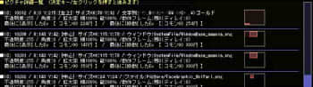
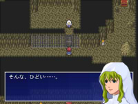
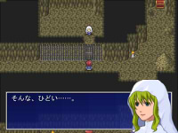

■2011-10-29 (土) WOLF RPGエディター2公開▼
ときどきそのまま夜が明けたりして、ちょっと修羅場だったウルフです。
その過程でCD用のデータ提出も行ったので、10月27日をもって、
WOLF RPGエディター2(公式ｻｲﾄへ)を
正式版としてリリースすることになりました。

基本システム2になってメニュー画面も少し綺麗に
<紹介記事>
【使い勝手が大幅に向上し、自由度も増した「WOLF RPGエディター」v2.00が公開】(ｱｰｶｲﾌﾞ)
窓の杜さんがこの記事より詳しくウディタ2を
紹介してくださっていますので、気になる方はこちらもぜひ！
【機能追加】
ウディタ2になって、大量の機能が追加されました。
詳しくは、以下の更新履歴をどうぞ。
＜ウディタ2更新履歴(新ｳｨﾝﾄﾞｳ)＞
自由変形ピクチャで自重しないキャラ演出も簡単に！

(キャラ画像はFirstSeedMaterial様より）
これ以外にも、インターフェースの大幅改善や
デバッグ関連機能のパワーアップ、細かな機能の追加など、
多岐にわたって機能を追加しています。
デバッグ機能では、表示中のピクチャ詳細を確認できる
F7キー機能が個人的にオススメどころです。
【F7のピクチャ確認機能】

ピクチャの現在のパラメータ表示。表示位置はピンクの■で表示される
最後に処理したイベントコマンド位置も記載されるので、
ピクチャ処理のバグ探しも簡単！
……といっても、たぶん、そういうところで苦労した人にしか
分からない便利さです、ええ。
という感じで、ややマニアックな内容も多いので、大半の人には
「だから何なんだよ！」という話になってしまってると思いますが、
とりあえず、ウディタ2になって、
「これまで苦労していたことが色々楽になって、
できることの幅が少し増えた」
と認識してくださればOKだと思います。
【素材の大幅追加】
ウディタ2は、Ver1までの素材に加え、
・ユノ様の基本素材企画キャラチップ ・主にpanop様による戦闘アニメエフェクト ・ぴぽ様による豊富なマップチップ ・多くの方々によるMIDI素材・効果音 ・キタカライ様のベース画像を元にした、現在進行中の合成顔グラフィック |
などが追加され、Ver1に比べて大幅に充実しています。
おかげさまで素材がかなり揃いつつあるので、
ダウンロードした直後から、それなりのゲームが
作れるようになっていると思います。
Ver1で、DLしたけど素材集めで挫折したという方は、よろしければぜひ。
次は、本に必要な仕上げ作業と並行しながら、
いよいよ、モバイル用作品のクリフ深淵録3話作成に入ります。
今現在、ほとんどごはん食べられないわ、食べたらリバースするわで
もともと弱かった体を酷使しすぎたので、
少しゆっくり行きたいと思います。
出版業界の人は本当に凄い、とんでもないスピードとバイタリティです。
もしかしたら、ウディタ本が11月中にも発売されるかもしれません。
2011-10-29 (土)  カテゴリ: ウディタ
カテゴリ: ウディタ
 カテゴリ: ウディタ
カテゴリ: ウディタ


 
